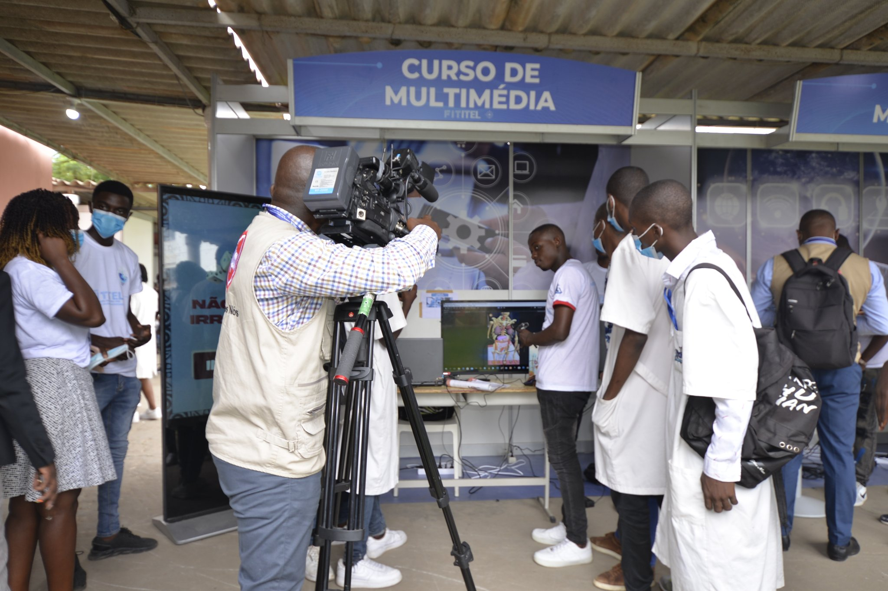
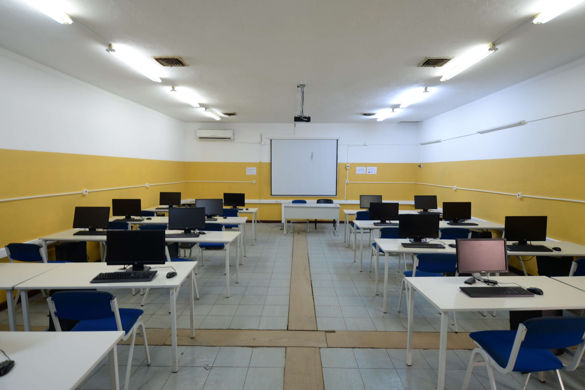
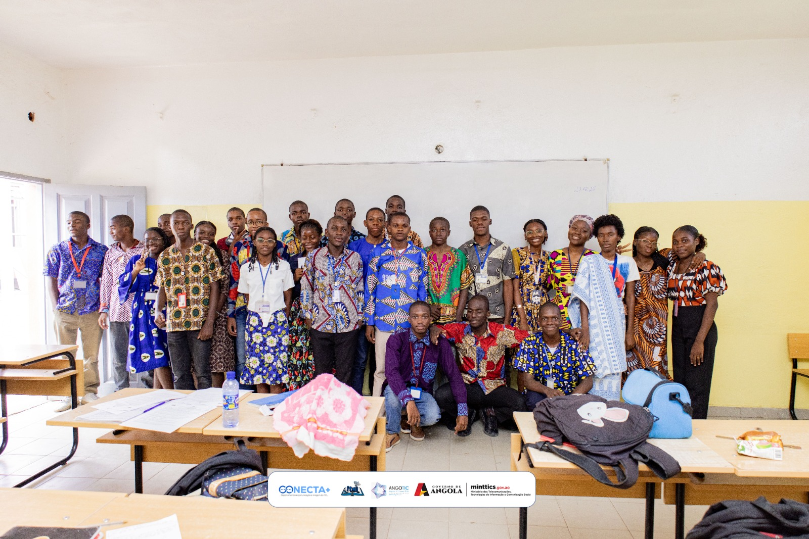

Inscrever-se
Inscrever-se
Inscrever-se
Inscrever-se
Fique por dentro das últimas novidades do ITEL

Os estudantes do ITEL participaram na feira tecnológica apresentando projetos inovadores nas áreas de informática e telecomunicações.

O instituto inaugurou novos laboratórios equipados com tecnologia moderna para melhorar a formação prática dos estudantes.

O ITEL orgulha-se de representar África através da educação, inovação e tecnologia, formando jovens preparados para impulsionar o desenvolvimento do continente.